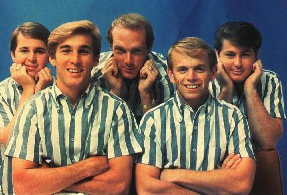

Dennis dies from drowned in Marina Del Ray in California in 1983.
Carl Wilson died from cancer in 1998.
Beach boy’s original member Brian Wilson is the leader and chief songwriter of the group.
Mike Love one of the founding member of the band.
Al Jardine was a original member of the beach boys was a guitarist, composer, and sometime lead vocalist.